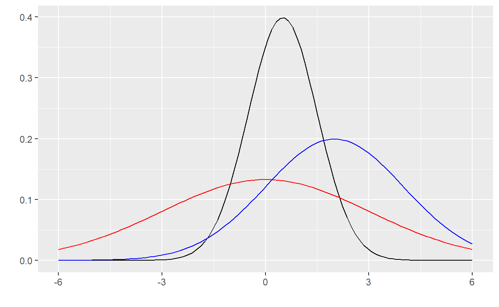

First we examine coverage rates of t-based confidence intervals for a single mean. To do this, we need to:
Follow the instructions to make the CI() function. Once you have the function to simulate our t-test, we can replicate the procedure using the function replicate(). replicate() takes two arguments, the number of times to replicate, and the function to replicate. For example: replicate(10000, my_function()). If we replicate the function above 10000 times we can find the proportion of confidence intervals that contain the true mean.
CI <- function() {
# Use rnorm() to Generate 50 N(0,1) random variables
x <- #YOUR CODE HERE
# Use t.test() on your sample and extract confidence interval from t.test()
CI <- #YOUR CODE HERE
#Assess if CI covers true mean (TRUE/FALSE)
#YOUR CODE HERE
}
#Use replicate() to repeat your function 10000 times
reps <- #YOUR CODE HERE
# Calculate proportion of CI's that contain true mean
mean(reps)X <- rnorm(50, 0, 1)
CI <-t.test(X)$conf.int
CI[1] < 0 & 0 < CI[2]Okay, that worked like it is supposed to; this part we already knew. What about simultaneous confidence intervals? Let’s repeat the above steps, but now let’s look at the means of three populations. We will give each populations their own mean to avoid confusion, and help us follow the process. The question we are exploring: Does our family of three 95% confidence intervals cover their respective true parameters 95% of the time?
CI_simul <- function(){
# Three samples from three different Normal populations
X1 <- rnorm(50, 0, 1)
X2 <- rnorm(50, 5, 1)
X3 <- rnorm(50, 10, 1)
# Extract each confidence interval from their individual t.test()
CI1 <- t.test(X1)$conf.int
CI2 <- t.test(X2)$conf.int
CI3 <- t.test(X3)$conf.int
# Assess if all three CI's cover their true means (TRUE/FALSE)
CI1[1] < 0 & 0 < CI1[2] &
CI2[1] < 5 & 5 < CI2[2] &
CI3[1] < 10 & 10 < CI3[2]
}
reps_simul <- replicate(10000, CI_simul()) # repeat many times
# Calculate proportion of iterations where all three CI's contain their true mean
mean(reps_simul)The family of intervals has far less than 95% coverage! In fact, very close to \((1-\alpha)^3\) coverage, the result we expect if the three data sets (and confidence intervals) are independent. In this situation, we need a simultaneous inference correction. We need a correction because we want to be able to say “Our family of intervals collectively cover their true parameters at least 95% of the time.”
The Bonferroni correction increases the individual confidence to \(1 - \alpha/k\), where \(k\) is the number of intervals, to achieve a family-wise coverage of 95%.
Modify the above simulation by specifying the confidence level of each t.test() to be \(1-\alpha/k\). We can specify the confidence level with the conf.level argument.
CI_simul <- function(){
# Three samples from three different Normal populations
X1 <- rnorm(50, 0, 1)
X2 <- rnorm(50, 5, 1)
X3 <- rnorm(50, 10, 1)
# Increase each CI to "1 - 0.05/k", where k = 3 groups
k <- 3
CI1 <- t.test(X1)$conf.int
CI2 <- t.test(X2)$conf.int
CI3 <- t.test(X3)$conf.int
# Assess if all three CI's cover their true means (TRUE/FALSE)
CI1[1] < 0 & 0 < CI1[2] &
CI2[1] < 5 & 5 < CI2[2] &
CI3[1] < 10 & 10 < CI3[2]
}
reps_simul <- replicate(10000, CI_simul()) # repeat many times
# Calculate proportion of iterations where all three CI's contain their true mean
mean(reps_simul)CI1 <- t.test(X1, conf.level = 1 - 0.05/k)$conf.int
CI2 <- t.test(X2, conf.level = 1 - 0.05/k)$conf.int
CI3 <- t.test(X3, conf.level = 1 - 0.05/k)$conf.intWe should be back around 95%! Note that this isn’t exact in most cases. The Bonferroni correction works in a wide range of situations, but it is our most conservative choice for controlling the family-wise error rates. Another option for multiple comparison correction is “Tukey’s honest significant difference,” or Tukey’s HSD for short.
If we have a collection of unadjusted p-values from a variety of tests, then we can use p.adjust to adjust all of them at once. Let’s take three samples of size 50 from different normal distributions: \(N(0.5, 1)\), \(N(0,3)\), and \(N(2,2)\). We are going to perform one-sample t-tests, testing the null hypothesis that the mean is zero in each case.
X1 <- rnorm(50, 0.5, 1)
X2 <- rnorm(50, 0, 3)
X3 <- rnorm(50, 2, 2)The true distributions look like this.

Now we use t.test to test the equivalence of the pair-wise means, and p.adjust to adjust the p-values according to the Bonferroni correction.
# Extract each p-value from their individual t.test()
p1 <- t.test(X1, mu=0)$p.val
p2 <- t.test(X2, mu=0)$p.val
p3 <- t.test(X3, mu=0)$p.val
# What are the un-adjusted p-values?
c(p1, p2, p3)## [1] 1.549597e-04 7.694276e-01 1.720209e-08adjusted <- p.adjust(c(p1,p2,p3), method = "bonferroni")
# What happened to the p-values after adjusting?
adjusted## [1] 4.648790e-04 1.000000e+00 5.160628e-08We can see that each of the p-values tripled in size (but didn’t go past 1). This is because we made three tests, so \(k=3\).
For this portion of the lab we use the data from the Module 1 homework with the heights of baseball, soccer, and basketball players.
The data contains the height of players from the three different sports, and we want to answer the question: Do any two of the sports have the same mean height? The naive option is to calculate individual t-based confidence intervals for each of the three pairwise differences. Do this below to see the confidence interval for the pairwise comparisons.
# heights <- read.csv("Sport_Heights.csv", row.names = 1)
# Create individual height vectors by sport
soccer <- subset(heights, Sport == "soccer", "Height")$Height
baseball <- subset(heights, Sport == "baseball", "Height")$Height
basketball <- subset(heights, Sport == "basketball", "Height")$Height
# Individual confidence intervals
# Use t.test and $conf.int to get the CIS for each pair
#YOUR CODE HEREt.test(basketball, baseball, var.equal = FALSE)$conf.int
t.test(soccer, baseball, var.equal = FALSE)$conf.int
t.test(soccer, basketball, var.equal = FALSE)$conf.intHowever, from the previous example, we know this set of intervals will not have a 95% family-wise coverage rate. Therefore, we apply Tukey’s correction, and compare.
TukeyHSD requires that its data come from a fitted model, so the first line of code below fits a model with the function aov(), which stands for “Analysis of Variance.” Passing the aov() fit of height against sport tells TukeyHSD that height is grouped by sport. Use the TukeyHSD() function below.
fit <- aov(Height ~ Sport, data = heights)
summary(fit)
#use TukeyHSD on the fitted model for the adjusted confidence intervals
#YOUR CODE HERETukeyHSD(fit)The first line fits the model and creates the Anova table returned by the second line. This table should look familiar from the Module 1 homework! The first line reminds you of the procedure being used, and the family-wise confidence level for the intervals calculated. Confidence intervals for the differences are provided in the table, in the columns labeled “lwr” and “upr.” Notice that, as expected, they are all wider than their respective t-based non-corrected intervals. With these wider intervals, the family-wise coverage rate will be 95% in repeated experiments. Also notice that the individual t-based confidence interval for the difference between mean soccer and baseball heights does not contain zero. However, the corrected interval does contain zero, meaning that we would reach different conclusions depending on the method used.
Food for thought-how would you use a simulation to explore the Tukey HSD corrected confidence interval coverage rates?